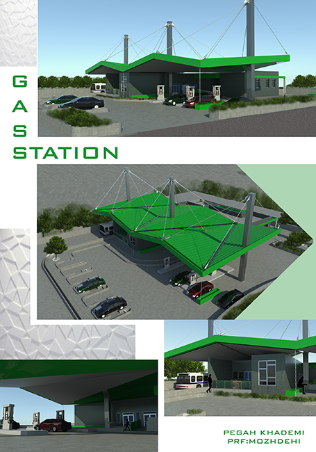

This project is a gas station in a road with some public facilities and the main focous was on technical
detailes. Most important issue was how defet the rain pouring in north of Iran.
▾

In this structure I used cable to
provide longer aperture.
▾
The important thing is how we should manage cars,bus and oil tanker directions by our design.
Back to timeline